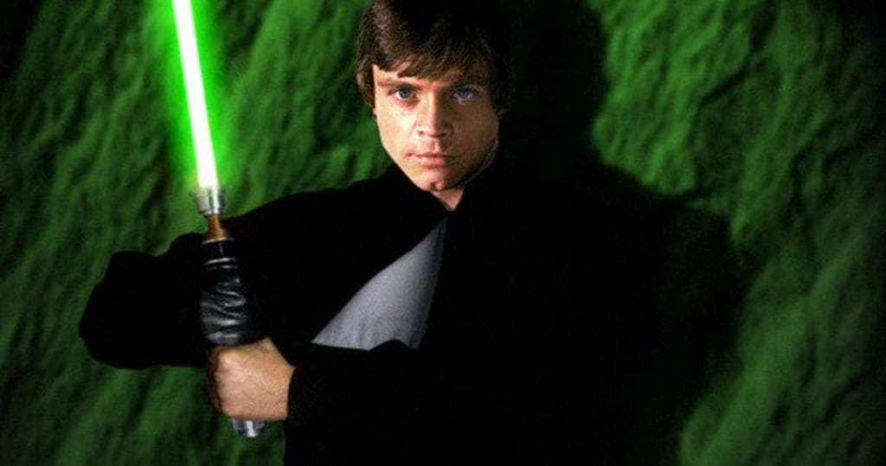

luke Skywalker
Posted on June 6, 2020 at 12:00 PM
Люк Скайуокер (англ. Luke Skywalker) — один из главных персонажей вселенной «Звёздных войн», джедай, сын сенатора с Набу Падме Амидалы Наберри и рыцаря-джедая Энакина Скайуокера. Старший брат-близнец Леи Органы Соло. В оригинальной кинотрилогии и трилогии-сиквеле в роли Люка снялся Марк Хэмилл[1][2]. Родился в медицинском центре Полис-Масса в день создания Галактической Империи. После смерти его матери Люка отправили на Татуин к сводному брату Энакина Оуэну Ларсу, чтобы спрятать от Палпатина. На этой планете, под присмотром опекунов и магистра Оби-Вана Кеноби, Люк провёл своё детство. Соединился с Силой в фильме «Последние Джедаи».
Родился в 19,5 ДБЯ, в день упразднения Галактической Республики. После того, как его отец обратился на тёмную сторону Силы, мать умерла, а сестра была удочерена сенатором Бэйлом Органой и увезена на Алдераан, Люк воспитывался дядей (сводным братом отца) и тётей на пустынной планете Татуин. Имперские штурмовики, прилетевшие на Татуин в поисках похищенных повстанцами чертежей «Звезды Смерти», убили дядю и тётю Люка. Тогда юный Скайуокер, наставляемый старым джедаем Оби-Ваном Кеноби, примыкает к повстанческому Альянсу и становится значимой фигурой в ходе Галактической Гражданской войны. Будучи причастным к тайнам Силы, он возродил Орден джедаев, практически уничтоженный антагонистом джедаев — ситхом Императором Палпатином. Плод запретной любви между Падме Амидалой и джедаем Энакином Скайуокером, Люк Скайуокер долго не ведал о своём происхождении. Всё детство Люк провёл на Татуине, работая на ферме своего дяди. Но в 0 ДБЯ в руки Люку попали два дроида — C-3PO и R2-D2 — и последний поведал ему о своём задании — отыскать Оби-Вана Кеноби, которого Люк знал как странного отшельника, живущего неподалёку. Выслушав послание, переданное дроидами, Оби-Ван отправился на помощь товарищам и взял с собой Люка. Люк проявил себя способным учеником и смог обучаться у самого Йоды. В 3 ПБЯ тайну своего рождения Люк узнал от своего отца, Дарта Вейдера. С покорностью и спокойствием, отличающими истинного джедая, Люк принял свою судьбу и продолжил сражаться. И наконец, Скайуокер безоружным пришёл в ловушку, подготовленную самим Императором с целью переманить его на Тёмную сторону. Во время сражения с отцом Люк попытался повлиять на него с целью вернуть на светлую сторону Силы. После того как Дарт Вейдер был побеждён, Люк Скайуокер не стал его убивать и продолжил убеждать вернуться обратно к свету, несмотря на то, что в это время император подвергал его пыткам молнией, в итоге Дарт Вейдер осознал правоту сына и сбросил императора в шахту Звезды смерти, после чего сам погиб. Дальнейшая судьба Люка описана в комиксах о звёздных воинах. После многочисленных приключений, подробно описанных в комиксах (например: становления магистром, учителем, Гранд-мастером; изучения силы; определения природы тёмной и светлой стороны; восстановления демократии в галактике; основания нового Ордена Джедаев), Люк сливается с Силой, чтобы и в будущем наставлять будущие поколения. После приобретения Диснеем прав на франшизу «Звёздных войн» все события основного канона после VI эпизода были расписаны заново, а то, что ранее именовалось Расширенной вселенной (англ. Extended Universe) и имело различные степени признания со стороны Lucasfilm, получило общее название «Легенды». В фильме «Звёздные войны: Пробуждение силы» становится известно, что Люк действительно тренировал джедаев в возрождённой академии, но после того, как его племянник Бен Соло, будучи одним из его учеников, переходит на Тёмную Сторону и истребляет всю остальную академию, Люк уходит в изгнание на далёкую планету. В конце фильма Люк был найден восприимчивой к Силе мусорщицей Рей с помощью оставленных координат, найденных R2-D2. В фильме «Звёздные войны: Последние джедаи» Люк Скайуокер принялся за обучение Рей искусствам Светлой стороны Силы и вступил в борьбу с силами Верховного Лидера Сноука и его ученика Кайло Рена — предводителя Рыцарей Рен. После финальной схватки в виде проекции со своим бывшим учеником Кайло Реном Люк соединился с Силой, как магистр Йода в VI эпизоде.